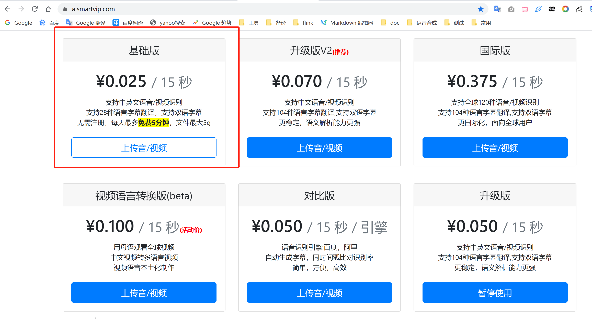
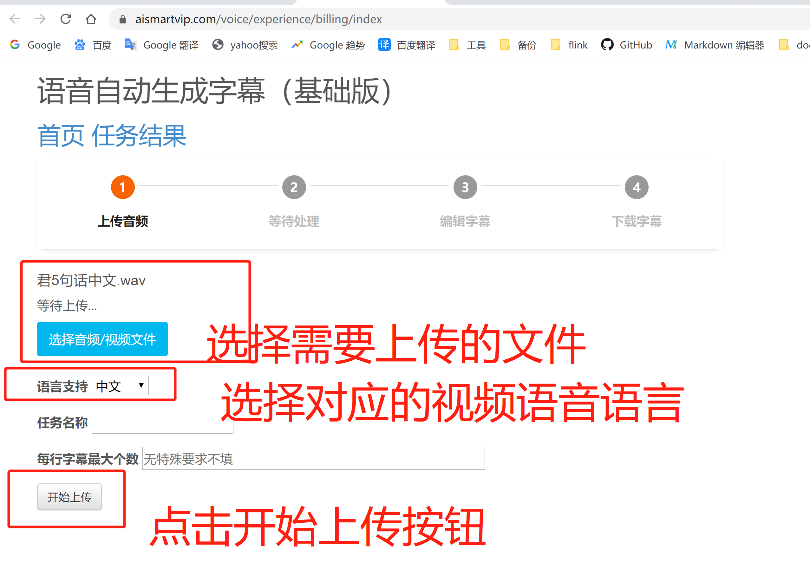
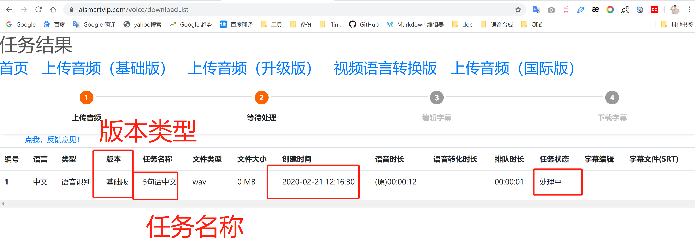
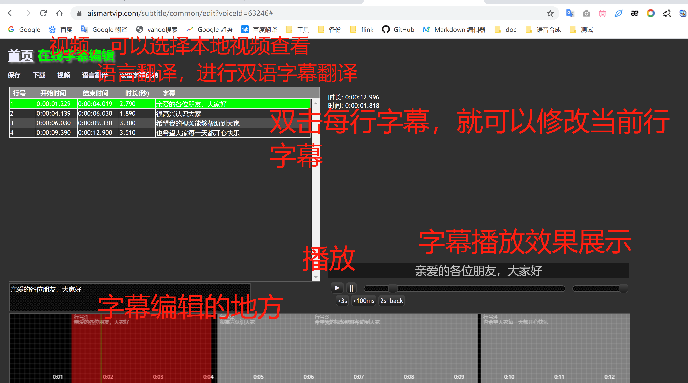
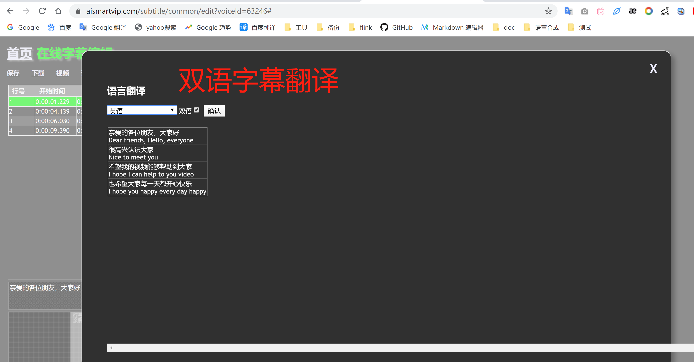
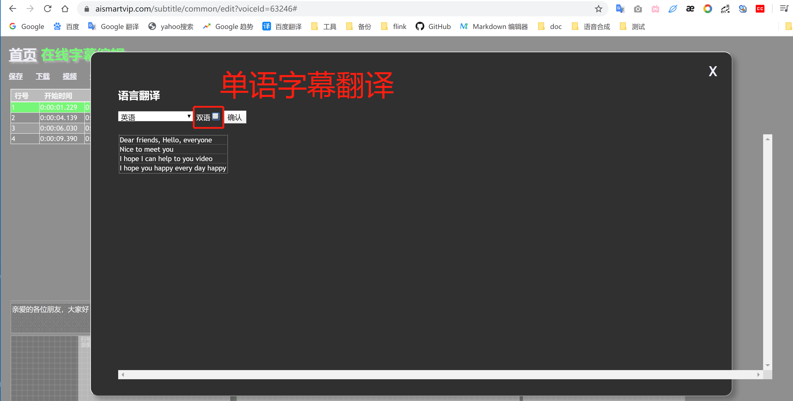
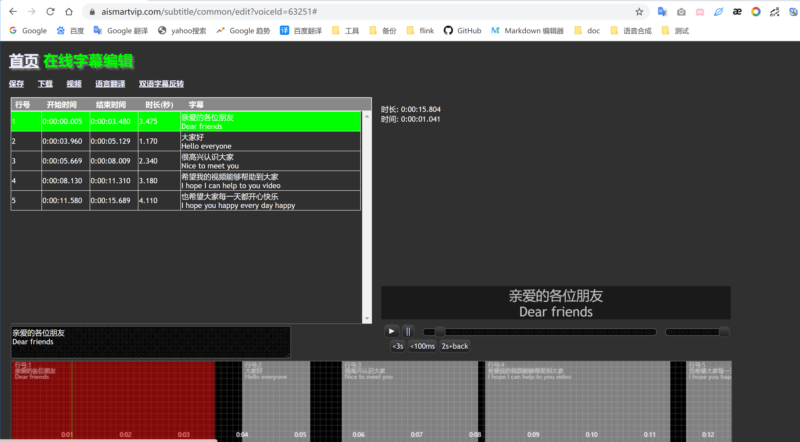
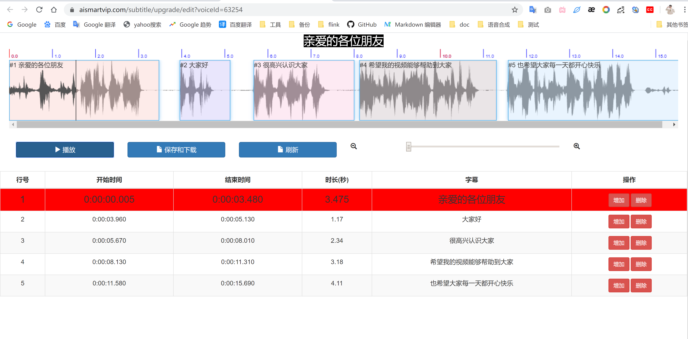

语音自动生成字幕(基础版)
- 第一步:选择对应的版本
- 第二步:上传音/视频文件
- 第三步：任务进度
- 第四步：字幕编辑(旧)版本
- 第五步：字幕编辑(新)版本
- 第六步：下载字幕文件
第一步:选择对应的版本
- 根据自身需求，选择合适的版本
- 该版本目前每天每用户免费前5分钟

第二步:上传音/视频文件
- 上传需要进行语音自动识别的语音/视频文件
- 语言支持：原音频/视频的语言(支持、中文、英文、粤语、四川话)
- 任务名称：当前上传语音取个名字，方便识别(默认名字为文件名称)
- 每行字幕最大个数：无特殊要求不写(默认值)
- 开始上传按钮：触发提交动作

第三步：任务进度
- 上传文件的进度
- 待状态变成：已完成状态，可以下载srt字幕，srt(PR)字幕，VTT字幕
- 字幕编辑分两个版本:字幕编辑(旧),字幕编辑(新)
- 字幕编辑(旧):支持双语翻译、单语翻译、支持全球 104种语言翻译
- 字幕编辑(新):支持字幕单句编辑，可以一句一句播放音频和修改对应的字幕。（非常适合一句一句修改字幕）
- 在线播放音频+字幕展示

第四步：字幕编辑(旧)版本
- 字幕编辑工作台：支持双语字幕翻译、单语字幕翻译、双语字幕反转、字幕编辑、语音播放(字幕同步展示)、字幕下载
- 字幕编辑：可对每一行字幕进行修改;可增加一行字幕，删除一行字幕，修改完成后可保存、下载字幕、可同步播放语音(字幕同频展示)
- 双语字幕：双持双语字幕翻译，可选择108种语言进行字幕翻译，选择对应的字幕翻译后，点确认按钮确认。
- 双语字幕反转：双语字幕，上下可自行调结，如中英双语字幕，可调结中文在上面，英语在下面;或英文在上面，中文在下面




第五步：字幕编辑(新)版本
- 字幕编辑工作台：新版本，支持一句一句话播放音频，和字幕修改
- 可修每句字幕开始时间，结束时间，可拖动字幕图块，实现时间更改
- 可新增字幕，修改字幕，删除字幕

第六步：下载字幕文件
- srt格式字幕文件，PR(Adobe Premiere Pro CC 2019)字幕
- vtt格式字幕文件下载
1
00:00:00,005 --> 00:00:03,480
亲爱的各位朋友
Dear friends
2
00:00:03,960 --> 00:00:05,130
大家好
Hello everyone
3
00:00:05,670 --> 00:00:08,010
很高兴认识大家
Nice to meet you
4
00:00:08,130 --> 00:00:11,310
希望我的视频能够帮助到大家
I hope I can help to you video
5
00:00:11,580 --> 00:00:15,690
也希望大家每一天都开心快乐
I hope you happy every day happy